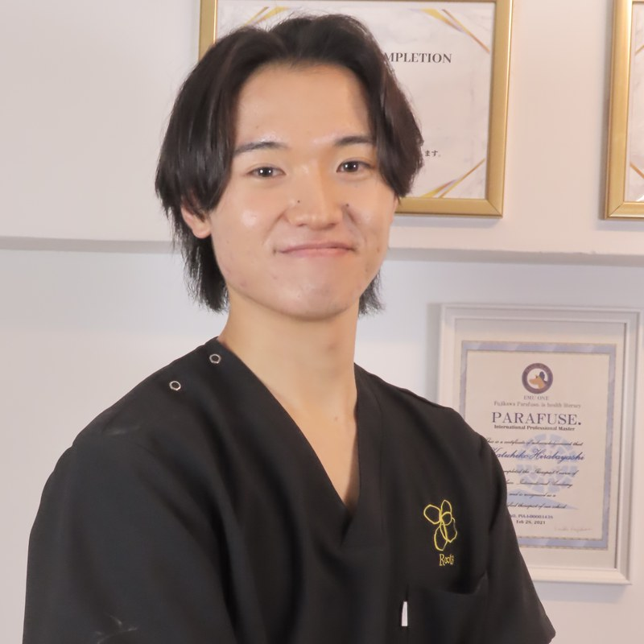

血を、入れ替える。
測って、動いて、また測る。
何歳からでも、体は根本から変わる。
千葉・鎌取で毎月ひらく健康教室です。
WISE SPACE鎌取(鎌取駅南口 徒歩3分・5階建てビルの3階)
9:40開場 ／ 参加費500円
教室の前(8:00〜10:00)とあと(12:30〜14:00)には、30分の無料個別相談もあります。
ReBloodとは
老化を進めるのは、酸化(サビ)・糖化(コゲ)・炎症(くすぶり)・遺伝子発現の乱れ。むずかしそうに聞こえますが、この4つ全部を一度に動かせるスイッチは、たった3つです。
ReBloodは、この3つのスイッチを毎月押しにいく教室です。きつい運動はしません。着替えも要りません。
体は個体特性、栄養は生活習慣。どちらも一人ひとり違うから、あなたの数字を測るところから始めます。
ご案内
主宰

「もう歳だから」に、科学的な根拠はありません。90歳を過ぎても筋力が増えることは、35年前から研究で分かっています。だからReBloodは、何歳からでも始められます。
会場
WISE SPACE鎌取
千葉市緑区おゆみ野3-10-3・5階建てビルの3階
JR外房線 鎌取駅 南口から歩いて約3分
ReBlood ― アンチエイジング・トータルサポート